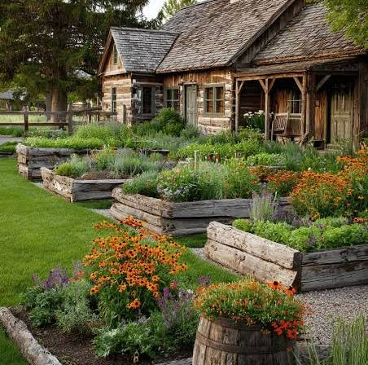

How It All Started
We started out as a simple, muddy working farm with a giant dream: to build a magical place where people could slow down, escape the city rush, and connect with nature. Over the years, our family-run team has worked tirelessly to transform these historic barns and fields into a vibrant, modern visitor destination.

Today, we pride ourselves on delivering a professional, top-notch experience wrapped up in a warm, relaxed country atmosphere. We put our hearts into everything we do, from caring for our animals to baking the perfect cake, and we cannot wait to welcome your family into our little piece of paradise.